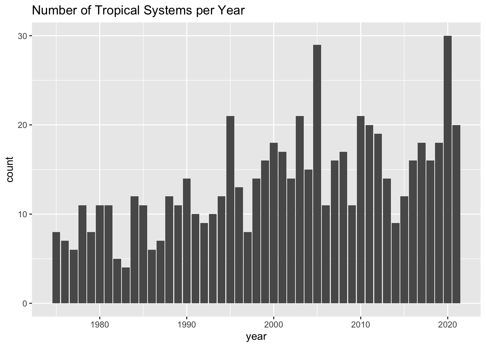

12 Counting Tropical Systems
In chapter Summary we quickly explored the values in column year, discovering the 47-year period of recorded data from 1975 to 2021. We can take a further step and ask:
How many storms are there in each year?
To answer this question, we need to do some data manipulation. My general recommendation when working with "dplyr"’s functions, especially when you are learning about them, is to do computations step by step, deciding which columns you need to use, which rows to consider, which functions to call, and so on.
Attempt Number 1
To find the number of storms per year, think about the columns that you need to select. Also think about the operations that seem to be required to get such count. You obviously need to select year; and you need to count(). With this initial setting, you could assemble the following pipeline of commands:
# first attempt
storms |>
select(year) |>
count()# A tibble: 1 × 1
n
<int>
1 19066Okay. This count is not what we are looking for. But before trying other ideas, spend some time reflecting on what the preceding command is doing.
Attempt Number 2
Perhaps we could add a group_by(year) operation before invoking count():
# second attempt
storms |>
select(year) |>
group_by(year) |>
count()# A tibble: 47 × 2
# Groups: year [47]
year n
<dbl> <int>
1 1975 238
2 1976 126
3 1977 92
4 1978 152
5 1979 324
6 1980 335
7 1981 311
8 1982 111
9 1983 88
10 1984 342
# ℹ 37 more rowsThis result looks more interesting. The returned output is a table with two columns: year and n. But after careful inspection, you should notice something awkward. While the first column makes complete sense, the second column n does not seem to be very helpful. Are there really 86 tropical systems in 1975? Are there 52 systems in 1976? And so on, and so forth? Of course not; 1975 did not have 86 systems. The numeric values under column n simply refer to the number of entries (i.e. rows) associated to each year.
You may not know this, but the previous table of counts can be obtained using a more compact command without the need to use select() and group_by(); you can just simply invoke count(year):
# same output of preceding command, only using count()
storms |> count(year)# A tibble: 47 × 2
year n
<dbl> <int>
1 1975 238
2 1976 126
3 1977 92
4 1978 152
5 1979 324
6 1980 335
7 1981 311
8 1982 111
9 1983 88
10 1984 342
# ℹ 37 more rowsAttempt Number 3
What if instead of counting year we count based on column name? For example:
# third attempt
storms |> count(name)# A tibble: 258 × 2
name n
<chr> <int>
1 AL011993 11
2 AL012000 4
3 AL021992 5
4 AL021994 6
5 AL021999 4
6 AL022000 12
7 AL022001 5
8 AL022003 4
9 AL022006 13
10 AL031987 32
# ℹ 248 more rowsMmm. Again, not the count that we are looking for. On a side note, observe the values displayed in the first rows of the returned table: e.g. AL011993, AL012000. These alphanumeric names correspond to names of tropical depressions that never reached tropical storm status. In other words, those system were not strong enough to be given a name, e.g. Amy, Caroline, Doris, etc.
Attempt Number 4
So far we’ve tried—unsuccessfully—counting based on column year alone, and also on column name alone. None of these columns, in and of itself, is enough because for any given storm or any given year we have multiple entries with duplicated values.
Again, the following suggestion may not seem obvious, but you can also try counting by taking into account both year and name
# fourth attempt
storms |> count(year, name)# A tibble: 639 × 3
year name n
<dbl> <chr> <int>
1 1975 Amy 31
2 1975 Blanche 20
3 1975 Caroline 33
4 1975 Doris 29
5 1975 Eloise 46
6 1975 Faye 19
7 1975 Gladys 46
8 1975 Hallie 14
9 1976 Belle 18
10 1976 Candice 11
# ℹ 629 more rowsCompared to the previous attempts, this output looks more promising. Finally, we can see that there were three (named) storms in 1975, two in 1976, three more in 1977, etc. However, we still don’t have those specific counts: 3, 2, 3, etc. But at least we are making some progress in what it seems to be the right direction.
Attempt Number 5
Why not taking the preceding command, and adding an extra count() but only considering year?
# fifth attempt
storms |> count(year, name) |> count(year)# A tibble: 47 × 2
year n
<dbl> <int>
1 1975 8
2 1976 7
3 1977 6
4 1978 11
5 1979 8
6 1980 11
7 1981 11
8 1982 5
9 1983 4
10 1984 12
# ℹ 37 more rowsVoila! Now we are talking. This table contains precisely the counts that we are looking for: number of systems in each year.
For convenience purposes, let’s assign this table into its own object, which we can call system_counts_per_year, or some other meaningful name that you might prefer to use:
system_counts_per_year <- storms |>
count(year, name) |>
count(year)
system_counts_per_year# A tibble: 47 × 2
year n
<dbl> <int>
1 1975 8
2 1976 7
3 1977 6
4 1978 11
5 1979 8
6 1980 11
7 1981 11
8 1982 5
9 1983 4
10 1984 12
# ℹ 37 more rowsNow that we have the counts or frequencies, it would be nice to visualize them with a barchart, like the following one:

Let’s discuss how to obtain this kind of graphic in the next chapter.